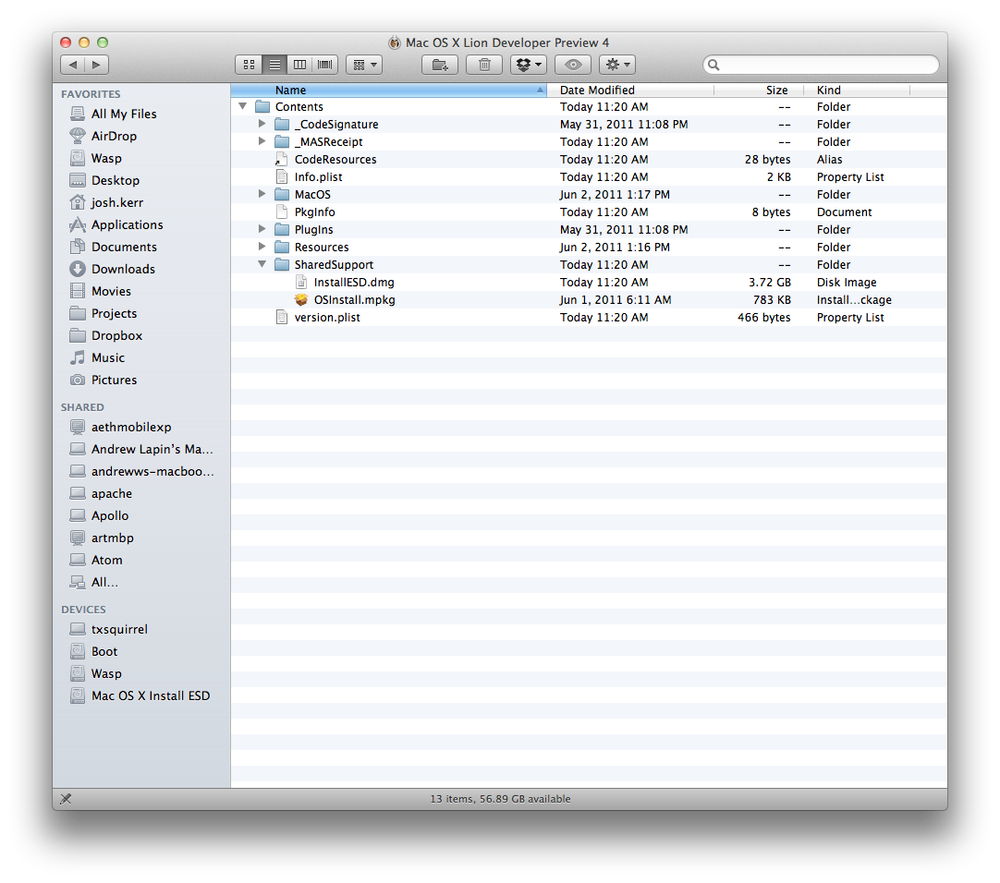

The new process for installing Mac OS X Lion requires that you download an installer from the Mac App Store. This is fine if you are upgrading your existing Mac, but what about install to a Mac without an operating system? Or worse, what do you do when you need to boot off an external drive to repair your Mac’s internal drive?
No worries, you can get to the Lion DMG file and burn that to any external disk. Just right click on the Mac OSX Lion installer in your Applications folder. Choose “Show package contents.” Now choose the contents/SharedSupport folder. In there is a 3+ gig .dmg file which you can burn to your external drive. It is bootable and has the full install as well as the repair utilities like Disk Utility. Nice.